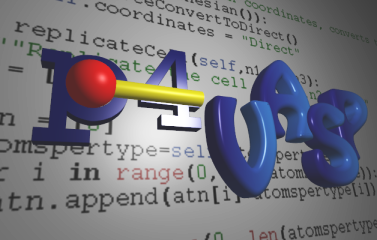

Here you can find the generated API Documentation:
- C-API documentation
This is the low level C library, used for actions too demanding to be written in python.
This contains mainly 3D graphics and also c-versions of some important objects (e.g. Structure)
- ODPdom page
Oversized Document Parser (ODPdom) is a XML-DOM parser written in C++ with the
python binding. It was initially developed for use in p4vasp to make parsing
of long vasprun.xml possible.
- Python-API documentation
Main library, contains also higher-level wrappers to the C library.